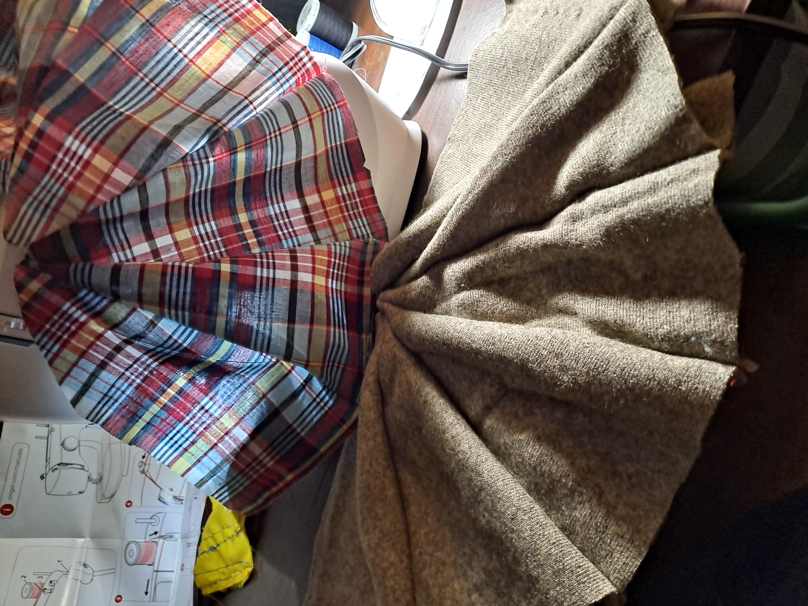
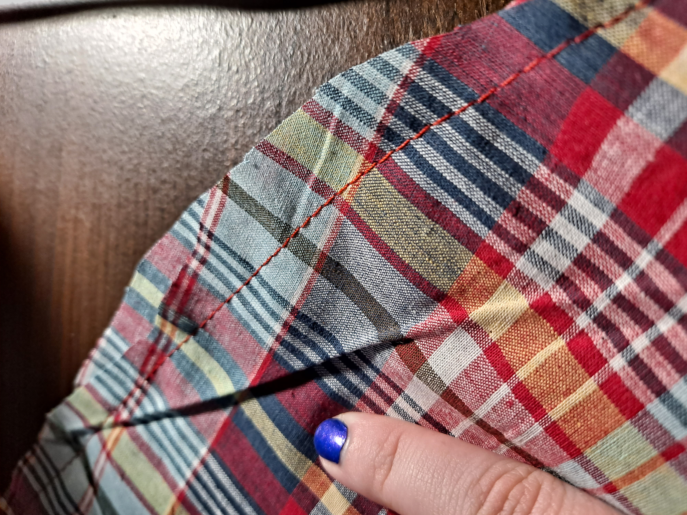
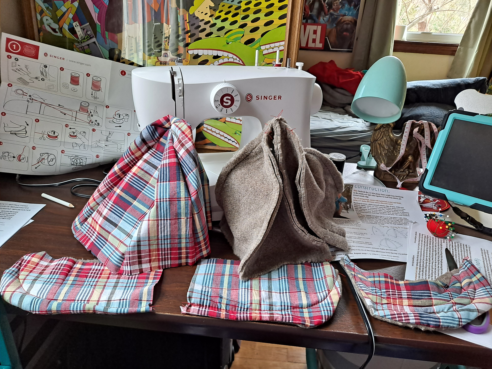
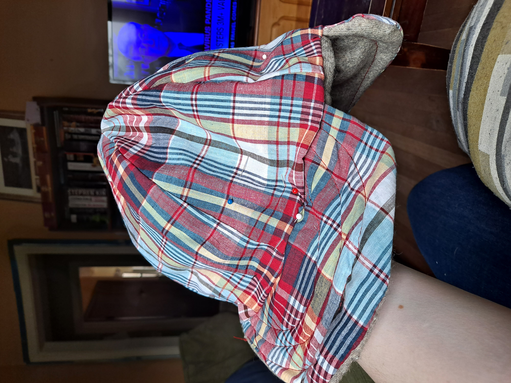
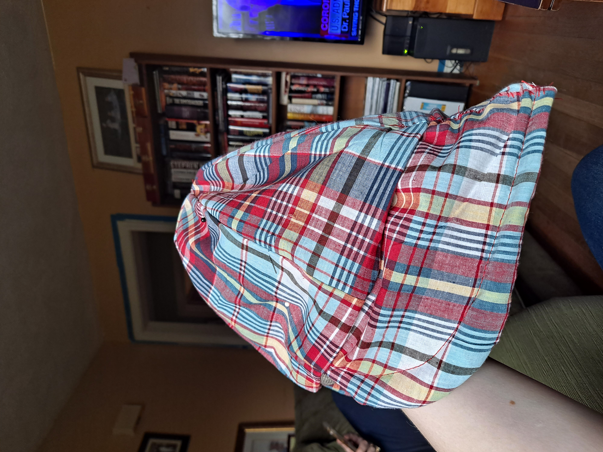
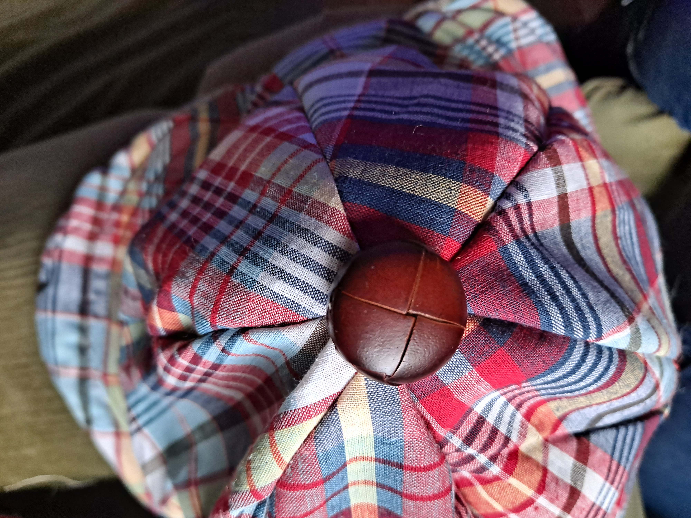
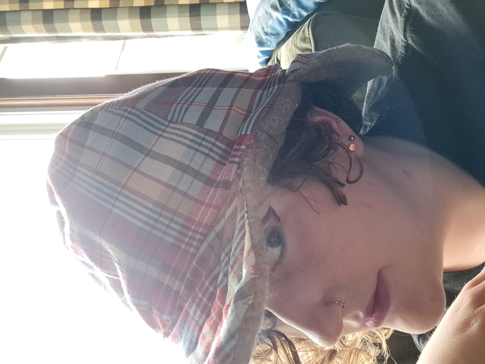
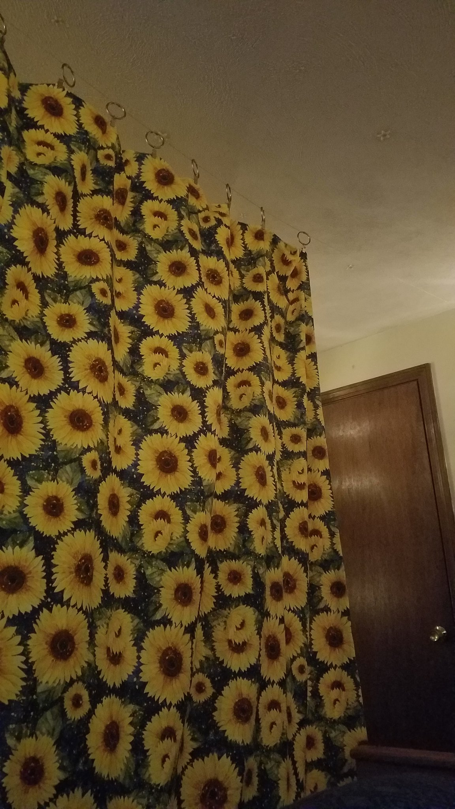

UCSD Holiday Party Skit
a fellow grad student, Suhas Pai, and i wrote, filmed, and appeared in this skit for UCSD CSE's fall 2021 holiday party:
Sewing, Embroidery, and Crochet
Wellesley College Computer Science Department Graduation Stole
i made my own stole for my graduation from Wellesley College. i selected the fabric, drafted a pattern, and hand-embroidered the computer science department logo for it.

Winter Hat
this was the first project i did on my first sewing machine. the end result reminded me of Sherlock Holmes' hat. it was very large on anybody but me - evidently my big head and fluffy hair make me a poor hat pattern model!
      Room Divider Curtain
separation of space by function is a very helpful concept for helping my brain run well. so, to help me get through the last year of my bachelor's degree from my family's home (thanks COVID-19), i made a room divider curtain.
i chose a sunflower calico for one side, and a sunny yellow cotton for the other. this was before i got my sewing machine, so the stitching took a long time. i mounted picture hooks on opposite walls, and then i added cafe clips onto the picture wire.
the curtain turned out pretty heavy, being two large layers of cotton, but it did a great job at helping me work, in addition to brightening up my room!
Games
10 Most Recent Logged Board Games